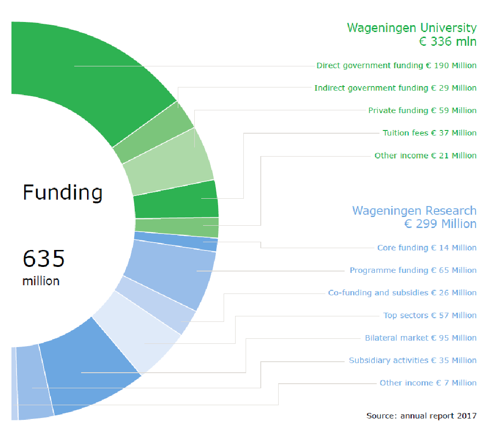

| Example of Research Fund (Wageningen University & Research, Netherlands) |
|---|
|
 Example of research funding distribution chart detailing government funding, tuition fees, and research subsidies
|
Total research fund in 2022 = ……... US Dollars
Total research fund in 2023 = ……... US Dollars
Total research fund in 2024 = ……... US Dollars
The averaged annum last 3 years of research fund = ……... US Dollars
More over research funding in the Annual report: http://www.wur.nl/en/About-Wageningen/Annual-report-Wageningen-University-Research.htm